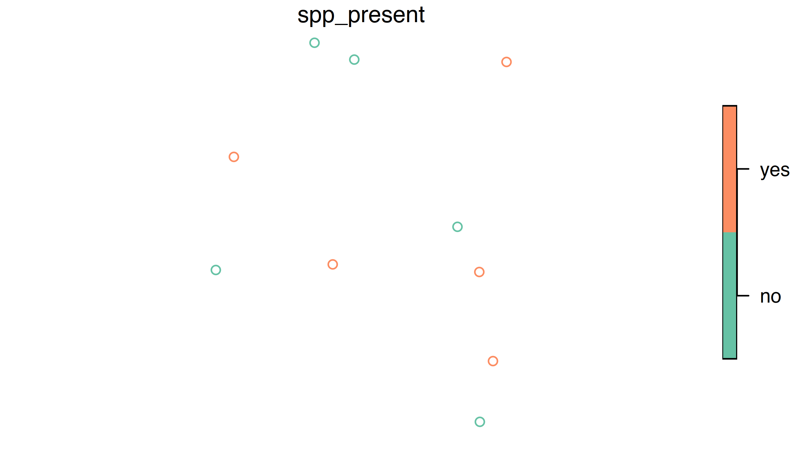

We often want to be able to add point data to a map. This vignette
will run through a simple example of converting a
data.frame of latitude/longitude pairs into an
sf points layer, and reprojecting it so that the points can
be overlaid on a layer from the bcmaps package.
For this example, say we have done surveys for a species across B.C., and we want to be able to add the presences and absences to a map of British Columbia.
First, load the packages we will need:
-
sffor working with spatial layers in the simple features format -
bcmapsfor accessing spatial files of B.C.
We will create a mock dataframe of locations of species presence/absences (in real life these would probably be in a csv or Excel file that we would import):
set.seed(42)
spp <- data.frame(site_num = LETTERS[1:10], spp_present = sample(c("yes", "no"), 10, replace = TRUE),
lat = runif(10, 49, 60), long = runif(10, -128, -120),
stringsAsFactors = FALSE)
head(spp)
#> site_num spp_present lat long
#> 1 A yes 54.03516 -120.7677
#> 2 B yes 56.91023 -126.8903
#> 3 C yes 59.28139 -120.0889
#> 4 D yes 51.80972 -120.4267
#> 5 E no 54.08522 -127.3405
#> 6 F no 59.34016 -123.8863Next we convert this to an sf points layer using the
sf package:
spp <- st_as_sf(spp, coords = c("long", "lat"))
summary(spp)
#> site_num spp_present geometry
#> Length:10 Length:10 POINT :10
#> Class :character Class :character epsg:NA: 0
#> Mode :character Mode :character
plot(spp["spp_present"])
In order to overlay these points on other spatial layers, they need to use the same Coordinate Reference System (CRS). Coordinate systems and projections in R can be confusing. There is a great reference on using them here: https://www.nceas.ucsb.edu/sites/default/files/2020-04/OverviewCoordinateReferenceSystems.pdf.
We know that our occurrence data are in decimal degrees in NAD83, so we will assign the
corresponding proj4string. You can specify the projection
using a full proj4 string
("+proj=longlat +ellps=GRS80 +towgs84=0,0,0,0,0,0,0 +no_defs")
or the EPSG code (4269). We will use the EPSG code because it’s shorter
and less likely to make a typo with.
spp <- st_set_crs(spp, 4326)All of the maps in the bcmaps package are in BC Albers
projection (EPSG:3005), which is the
B.C. government standard. It is an ‘equal area’ projection, meaning that
the size of areas is not distorted, and thus is suitable for analyses on
large areas.
If we look at the proj4string for
bc_bound_layer and our spp_df, we see that
they are different:
bc_bound_layer <- bc_bound()
st_crs(bc_bound_layer)
#> Coordinate Reference System:
#> User input: NAD83 / BC Albers
#> wkt:
#> PROJCRS["NAD83 / BC Albers",
#> BASEGEOGCRS["NAD83",
#> DATUM["North American Datum 1983",
#> ELLIPSOID["GRS 1980",6378137,298.257222101,
#> LENGTHUNIT["metre",1]]],
#> PRIMEM["Greenwich",0,
#> ANGLEUNIT["degree",0.0174532925199433]],
#> ID["EPSG",4269]],
#> CONVERSION["British Columbia Albers",
#> METHOD["Albers Equal Area",
#> ID["EPSG",9822]],
#> PARAMETER["Latitude of false origin",45,
#> ANGLEUNIT["degree",0.0174532925199433],
#> ID["EPSG",8821]],
#> PARAMETER["Longitude of false origin",-126,
#> ANGLEUNIT["degree",0.0174532925199433],
#> ID["EPSG",8822]],
#> PARAMETER["Latitude of 1st standard parallel",50,
#> ANGLEUNIT["degree",0.0174532925199433],
#> ID["EPSG",8823]],
#> PARAMETER["Latitude of 2nd standard parallel",58.5,
#> ANGLEUNIT["degree",0.0174532925199433],
#> ID["EPSG",8824]],
#> PARAMETER["Easting at false origin",1000000,
#> LENGTHUNIT["metre",1],
#> ID["EPSG",8826]],
#> PARAMETER["Northing at false origin",0,
#> LENGTHUNIT["metre",1],
#> ID["EPSG",8827]]],
#> CS[Cartesian,2],
#> AXIS["(E)",east,
#> ORDER[1],
#> LENGTHUNIT["metre",1]],
#> AXIS["(N)",north,
#> ORDER[2],
#> LENGTHUNIT["metre",1]],
#> USAGE[
#> SCOPE["Province-wide spatial data management."],
#> AREA["Canada - British Columbia."],
#> BBOX[48.25,-139.04,60.01,-114.08]],
#> ID["EPSG",3005]]
st_crs(spp)
#> Coordinate Reference System:
#> User input: EPSG:4326
#> wkt:
#> GEOGCRS["WGS 84",
#> ENSEMBLE["World Geodetic System 1984 ensemble",
#> MEMBER["World Geodetic System 1984 (Transit)"],
#> MEMBER["World Geodetic System 1984 (G730)"],
#> MEMBER["World Geodetic System 1984 (G873)"],
#> MEMBER["World Geodetic System 1984 (G1150)"],
#> MEMBER["World Geodetic System 1984 (G1674)"],
#> MEMBER["World Geodetic System 1984 (G1762)"],
#> MEMBER["World Geodetic System 1984 (G2139)"],
#> ELLIPSOID["WGS 84",6378137,298.257223563,
#> LENGTHUNIT["metre",1]],
#> ENSEMBLEACCURACY[2.0]],
#> PRIMEM["Greenwich",0,
#> ANGLEUNIT["degree",0.0174532925199433]],
#> CS[ellipsoidal,2],
#> AXIS["geodetic latitude (Lat)",north,
#> ORDER[1],
#> ANGLEUNIT["degree",0.0174532925199433]],
#> AXIS["geodetic longitude (Lon)",east,
#> ORDER[2],
#> ANGLEUNIT["degree",0.0174532925199433]],
#> USAGE[
#> SCOPE["Horizontal component of 3D system."],
#> AREA["World."],
#> BBOX[-90,-180,90,180]],
#> ID["EPSG",4326]]So let’s transform the dataframe of species presence/absences into
the same CRS as bc_bound_layer:
spp <- transform_bc_albers(spp)Now we can overlay the points on the provincial boundary dataset:
plot(spp["spp_present"], graticule = TRUE, reset = FALSE)
plot(st_geometry(bc_bound_layer), add = TRUE)Now we want to know what ecoregion of the province each of these
observations was in. We can use the ecoregions data from
bcmaps, and the st_join function from the
sf package to extract ecoregions from the point data and
add that information:
ecoreg <- ecoregions(ask = FALSE)
st_join(spp, ecoreg["ECOREGION_NAME"])
#> Simple feature collection with 10 features and 3 fields
#> Geometry type: POINT
#> Dimension: XY
#> Bounding box: xmin: 912519.3 ymin: 600149.1 xmax: 1383324 ymax: 1642418
#> Projected CRS: NAD83 / BC Albers
#> site_num spp_present ECOREGION_NAME geometry
#> 1 A yes CENTRAL CANADIAN ROCKY MOUNTAINS POINT (1341578 1016164)
#> 2 B yes BOREAL MOUNTAINS AND PLATEAUS POINT (945861.3 1324757)
#> 3 C yes HAY-SLAVE LOWLAND POINT (1337001 1602713)
#> 4 D yes COLUMBIA HIGHLANDS POINT (1383324 770393.7)
#> 5 E no EASTERN HAZELTON MOUNTAINS POINT (912519.3 1009950)
#> 6 F no MUSKWA PLATEAU POINT (1120431 1596971)
#> 7 G no MUSKWA PLATEAU POINT (1063173 1642418)
#> 8 H no THOMPSON-OKANAGAN PLATEAU POINT (1373357 600149.1)
#> 9 I yes FRASER BASIN POINT (1102484 1025860)
#> 10 J no CENTRAL CANADIAN ROCKY MOUNTAINS POINT (1297769 1139361)